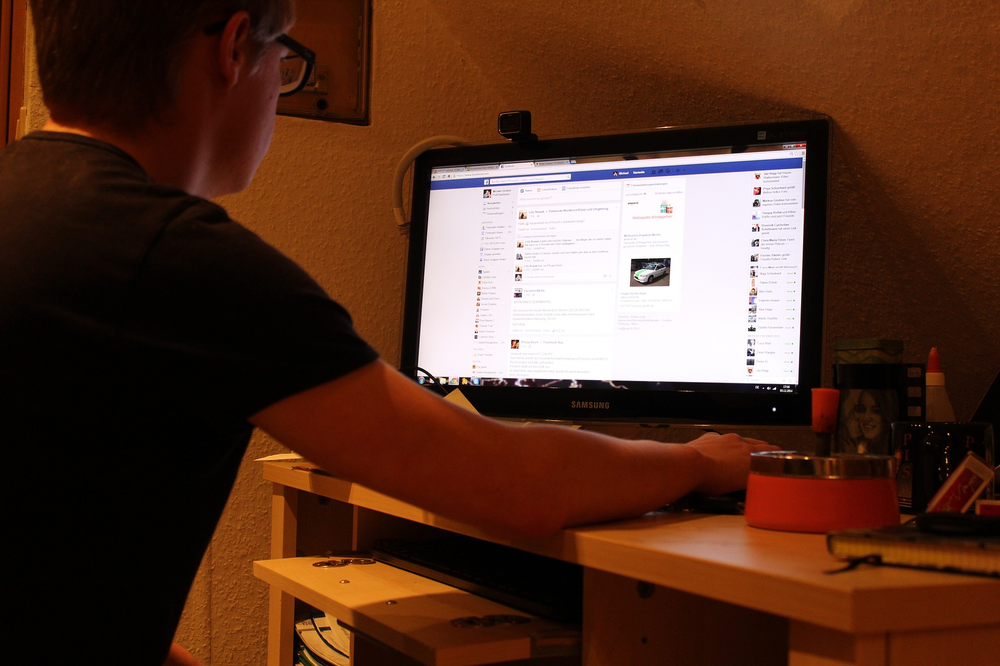
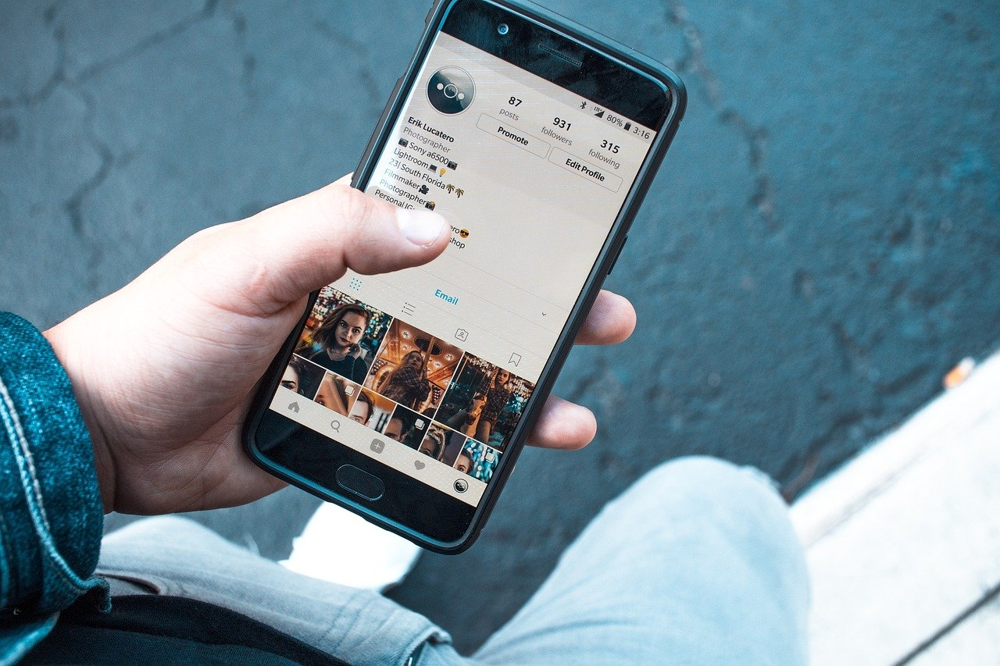

Having you or your brand visible on social media is a top priority for anyone today. Our talented team consists of designers and marketing experts that can identify your brand and create profiles around that message. Poorly executed social profiles can have a negative impact on your brand or not reach as many people. At a reasonable price, we do all the work and deliver high impact low cost profiles so you can focus on other aspects of your company. Having many social profiles also helps your website rank within search engines.
One CLick Services is a world class leading social media marketing company. We create ROI-driven social content for LinkedIn, Instagram and Facebook. If you’re looking to raise awareness, increase brand visibility or drive sales through social media, we can create the right content to engage, entice and convert your target audience.
At One Click Services, we recognized the gap between graphic creation and graphic consumption. We developed our own platform that allows us to create posts and focus on the strategy while providing transparency at every stage of the posts creation journey. We can help you create social media posts at scale for a wide variety of budgets. Our global team of social media post creators can make it easier for you to reach your target audience and manage your social media commitments.
One Click Services is a leading social media marketing agency with a focus on driving impactful business growth through social media services. Whether you are looking to enhance your brand's social media presence or drive targeted leads through social media advertising, our social media advertising services can help you hit your goals. Our social media advertising service area is proven to fast-track progress. By advertising through social media, 100% of our customers have seen the domino effect.
.jpg)